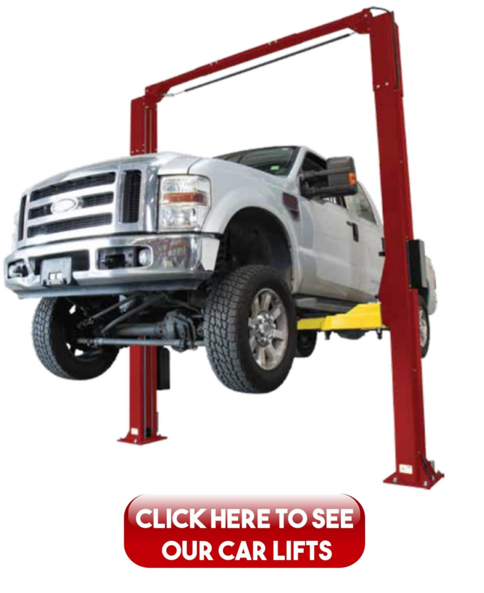
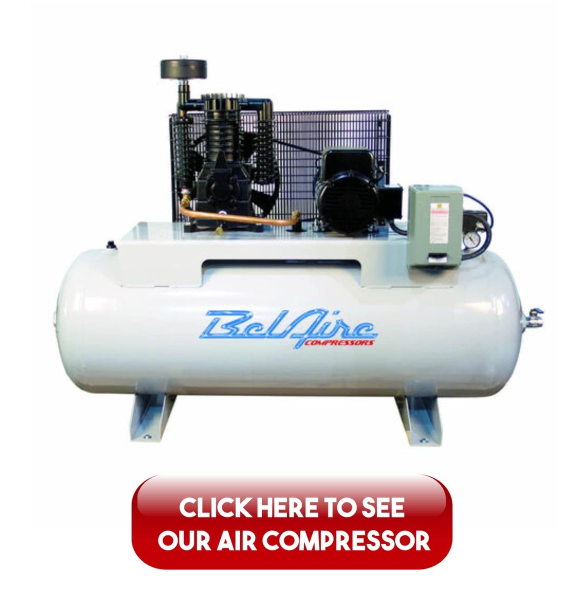
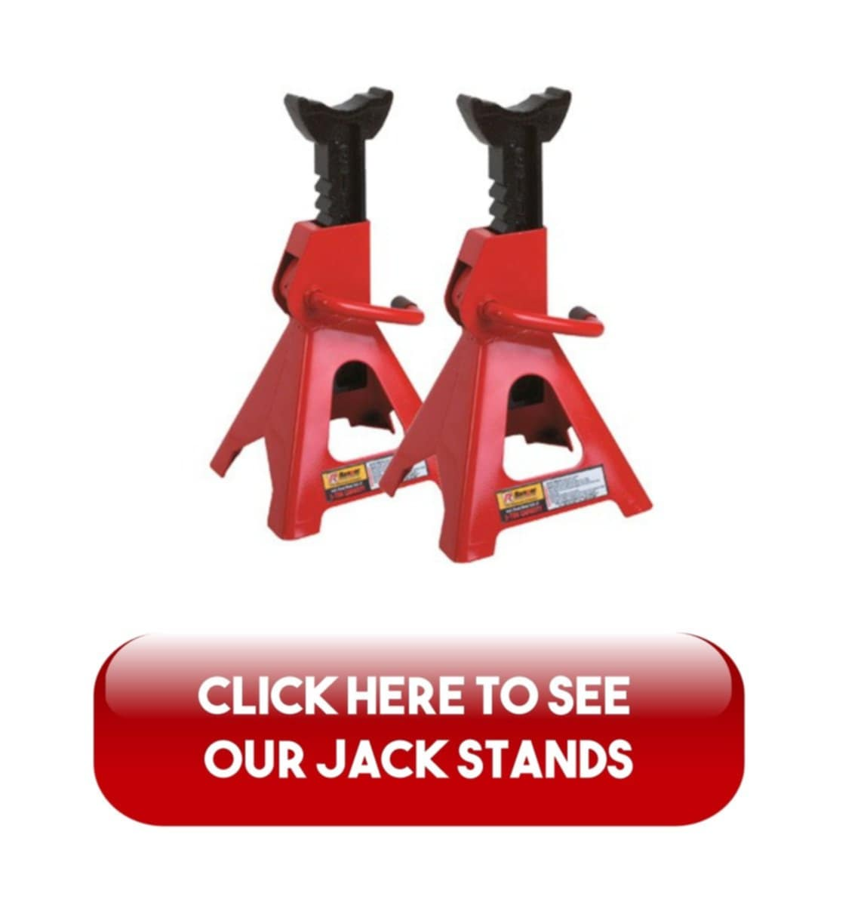
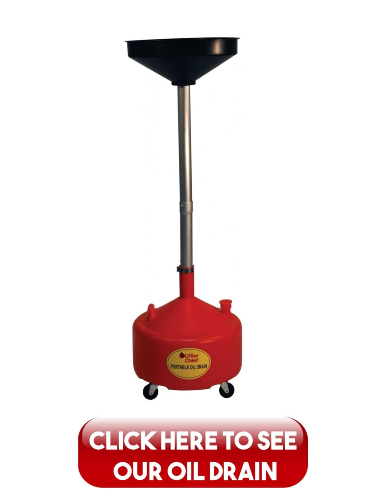
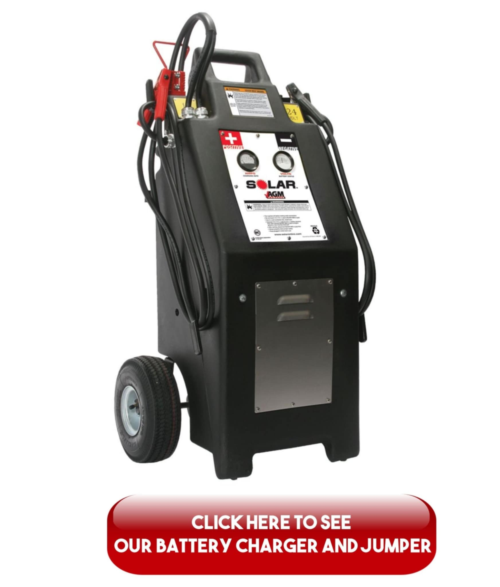

1. VEHICLE LIFT
Every mechanic needs to get under the vehicles to perform essential inspections and diagnostics. Your shop will need lifts to raise the vehicle to the height needed for these services. Match your needs to the various models and capacities of lift models. There are many characteristics that you need to consider. Including safety features, 2-post vs. 4-post construction, accessories, and power requirements. Be sure to buy lifts that are of high quality and name brand, to ensure availability of parts and service. Lifts are an important investment for your repair shop, as they're built to last many years.
Price:120$
2. Air Compressor
You will need a reliable air compressor to operate many tools within your shop, including pneumatic hand tools and some auto lifts. Get the highest capacity you can afford, to be sure you have the power you need for powering the needs of your shop – a good example would be a 60 or 120-gallon compressor.
Price 90$
3. Jack, jack stands, and pole jacks
Many auto repairs will require raising vehicles at least temporarily. So a strong floor jack will be utilized on a regular basis. Get a high-quality, high-capacity jack, and strong jack stands to support the vehicle once they're elevated. Pole jacks will also be useful to support axles or other components of raised vehicles.
Price 50$
4. Oil drain and oil caddy
Services like changing oil and transmission fluid will need an oil caddy with enough capacity to contain the largest fluid volume. As your services expand and you’re working with vehicles on lifts. A standing oil caddy that can reach the raised vehicle will make the job easier and quicker.
Price 50$
5. Battery charger and jumper
You know this better than we do but many jobs will pertain to dead batteries or charging problems. Your shop will need a good battery charger and jumper to handle these services. You don't need to break the bank but considering that you'll get a lot of these cases, it's pivotal to showcase your best equipment to your customers.
Price 100$